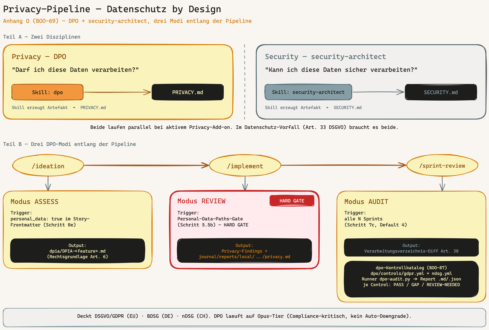
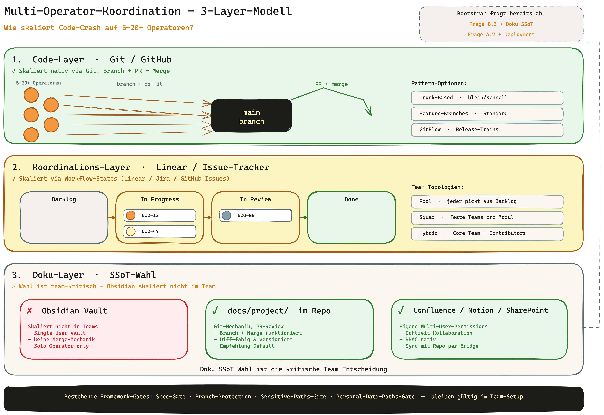

Governance für die KI-Software-Ära
Das Code-Crash
Framework
Vom Vibe-Coding zur Production-Readiness — ein Operating System für KI-gestützte Software-Entwicklung.
30-Minuten-Überblick · OWLIST
Das Problem
KI schreibt Code in Minuten.
Drei Wochen später steht das Chaos.
- Du weißt nicht mehr, warum eine Entscheidung so fiel — der Kontext ist weg.
- Die KI kennt das Projekt nicht mehr; jede neue Funktion zerstört eine andere.
- Keiner weiß, welche Version stabil ist. 50 Dateien, 3 halbfertige Features, kein Plan.
- Ergebnis: Slopware — KI-Mittelmaß, das die Qualitätsschwelle leise nach unten zieht.
Vibe Coding ist schnell — aber ohne Governance nicht produktionsreif.
Warum gerade jetzt
Code-Schreiben ist nicht mehr der Flaschenhals.
Intent ist es.
- Jevons-Paradox: wird Code billiger, entsteht mehr Code — nicht weniger.
- Wenn alle bauen können, entscheidet der Spark, nicht die Syntax.
- Ohne strikte Quality-Gates ertrinkt die Codebase in der eigenen Flut.
↑ Output
Input wird zur knappen Ressource. Was teurer wird: klarer Intent, technisches Urteil, Production-Readiness.
Was ist Code-Crash
Das Operating System für Code-Crash-Engineering

13 Skills · 4P-Pipeline · Governance-Schicht — die Theorie der KI-Ära als ausführbare Praxis.
Gamechanger 1
Intent is the new Code
- Ein eigener /intent-Skill vor dem ersten Prompt — Anti-Pattern-Self-Check inklusive.
- Template: „[Nutzergruppe] erreicht [messbares Ergebnis] ohne [Reibung]. Erfolg = [Metrik]."
- Der Intent propagiert durch alle Skills: Gate in der Ideation, Gewicht im Backlog, Messpunkt beim Implementieren.

Gamechanger 2
Die 4P-Pipeline ersetzt den Genehmigungs-Marathon
Perceive→
Prompt→
Produce→
Pitch

Liefert in Wochen statt Quartalen. Jeder Skill gehört eindeutig zu einem P.
Gamechanger 3
Quality-Gates statt Menschen-Kontrolle
- 3 Layer: IDE (live) → Pre-Commit-Hook → CI.
- ESLint, Semgrep, Coverage, Performance-Baseline, SonarQube greifen ineinander.
- Autonomy-Paradox: autonome Teams brauchen härtere, automatisierte Guardrails — weil keine Zeit für manuelle Reviews bleibt.
- Nichts wandert an den Gates vorbei in
main.

Gamechanger 4
Sprint = Token-Box, nicht Zeit-Box
80%
Ein Sprint ist 80% des Context-Windows des genutzten Modells — modellunabhängig.
Velocity ist tot: kein Burndown, keine Story-Points-Statistik. Outcome wird über Intent-Erfüllung gemessen.
Gamechanger 5
Tool-agnostisch & nicht One-Size-Fits-All
Das Framework ist die Methodik, das Tool ist nur der Ausführer.
Claude CodeCodexCursorAiderlokale LLMs
Governance-Modi nach Bedarf:
lite — Solo-Prototypstandard — Defaultheavy — reguliert
70% des Frameworks sind reine Konventionen (Datei-Layouts, Hooks, CI) — tool-unabhängig. Nur 30% (Slash-Commands) hängen am Tool.
Was wir besser machen
Kein Boilerplate. Kein Bürokratie-Framework.
Ein Governance-OS.
| Ansatz | Was er gibt | Was fehlt |
|---|
| Starter-Kits / Boilerplate | Code-Struktur am Tag 1 | keine Governance über die Zeit |
| KI-Coding-Tools (Copilot/Cursor) | Autocomplete, Geschwindigkeit | kein Intent→Production-Prozess |
| Schwergewicht (SAFe & Co.) | Skaliert Prozess | skaliert Bürokratie statt Agilität |
| Code-Crash Framework | Intent → Gates → Production, leichtgewichtig | — |
Privacy & Security by Design eingebaut · self-contained Bootstrap · skaliert von Solo bis 20+ Operatoren.
Key-Komponenten
Skills, Artefakte, Gates — ineinandergreifend
SKILLS
13 spezialisierte Skills
/intent · /ideation · /backlog · /implement · /architecture-review · /sprint-review · /pitch + DPO & security-architect.
ARTEFAKTE
Lebende SSoT
CONVENTIONS.md (Vertrag), specs/ (pro Story), journal/ (Reports + Learning-Loop), environment.json.
GATES
Hooks & CI
spec-gate, doc-version-sync, sensitive-paths, personal-data-paths, post-merge — automatisch, nicht optional.
Self-contained: git clone bringt alles mit — kein externer Skill-Pull nötig.
Vertrauen eingebaut
Privacy & Security by Design — nicht nachgereicht
- security-architect + SECURITY.md + sensitive-paths-Gate.
- DPO-Skill (Data Protection Officer): DSGVO / BDSG / nDSG, 3 Modi (Assess / Review / Audit).
- Hard Gate: kein Commit an personenbezogenen Pfaden ohne
privacy-ok.
- Du musst kein Compliance-Experte sein — die Skills stellen die richtigen Fragen.

Skaliert mit dir
Solo-Mac → VPS → Team mit 5–20+ Operatoren

Gleiche Methodik, vom ersten Solo-Projekt bis zur Coding-Factory. Deployment-Szenarien + Souveränitäts-Stack (EU) dokumentiert.
Der Beweis
„Funktioniert mein Setup wirklich?" — verifizierbar.
- verify-setup.sh — prüft programmatisch: Tools da, Hooks feuern, Artefakte existieren.
- 5-Schritte-E2E-Probelauf — bootstrap → ideation → implement → sprint-review → Konsistenz.
- Anti-Pattern-Selbstdiagnose im Sprint-Review — fängt Slopware, bevor sie sich festsetzt.
- Bilinguales HANDBUCH (DE + EN), 21 Anhänge als Nachschlage-Schicht.
Wie du startest
Zwei Befehle bis zum ersten gebootstrappten Projekt
git clone→
/bootstrap→
erstes Projekt
Ein interaktives Interview richtet Runtime, Governance-Modus, Gates und Artefakte ein — in Minuten, nicht Tagen.
Der Call
Schrader liefert die Theorie.
Code-Crash liefert die Praxis.
Hör auf zu hoffen, dass dein KI-Code funktioniert. Stell sicher, dass er es tut — strukturiert, mit Gates, produktionsreif.
github.com/vibercoder79/code-crash-framework · HANDBUCH.md / HANDBUCH.en.md
Backup · Architektur-Tiefe
Die Pipeline im Detail
| Phase | Skills | Output |
|---|
| Perceive | /intent | Intent-Dokument (technologie-agnostisch) |
| Prompt | /ideation · /backlog | specs/<ISSUE>.md, neutraler Backlog-Record |
| Produce | /implement · /architecture-review · /sprint-review | Code + Quality-Gates + journal/reports + Learning-Loop |
| Pitch | /pitch | Evidenz + Live-Demo-Struktur |
Quer dazu: DPO, security-architect, /breakfix, /research, /integration-test, /status. Optional: Hermes Compound-Layer über mehrere Projekte.